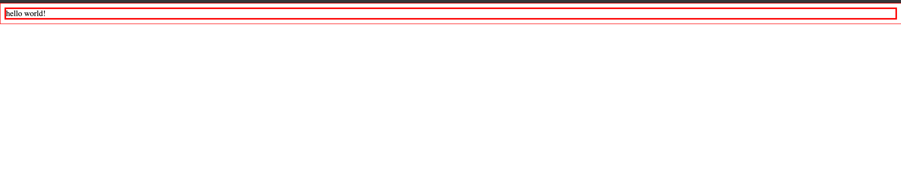

css-loader と style-loader どっちがどっちかってたまになるので、そうならないための備忘です。 これらは webpack の loader であり、JS で構築されるアプリケーション内で CSS を扱うために利用されます。 最近は CSS in JS の利用も増え、CSS ファイルを読み込む機会は減ってはきているものの、reset.css を読み込んだり、UI ライブラリが提供するグローバルな CSS を読み込んだりと CSS を直接 JS に import する機会はまだまだ多いと思います。 そして 1 ファイルでも CSS を読み込むなら loader にその設定が必要となるので、まだまだお世話になり続けるでしょう。
そんな利用機会の多い css-loader & style-loader ですが、呪文のように使われ続けてる印象があります。 そのせいかどっちがどっちか理解されていない印象もあります。 事実 Stack overflow では vote も集まっています。 そんな css-loader と style-loader を取り違えてしまう大きな原因は、これらが同時に出現することにあると思うので、片方だけ使ってみるということに挑戦して、「この 2 つはこういう違いがあるよ」と言う説明を試みます。
css-loader とは
The css-loader interprets @import and url() like import/require() and will resolve them.
とあり、JS の世界にある CSS のファイルを解決できる loader です。 JS ファイル内で読み込まれる CSS を文字列として JS の世界に持ち込めます。
JS 内で CSS を扱うための便利な機能が含まれており、たとえば modules option を使えば CSS Modules も実現できます。
module.exports = {
module: {
rules: [
{
test: /\.css$/i,
loader: "css-loader",
options: {
// いろいろなオプションを使って、CSSをJSで扱うための便利な機能をONにできる！！！！
modules: true,
},
},
],
},
}
style-loader とは
style-loader は,
Inject CSS into the DOM.
とあり、JS の中にある CSS 文字列を DOM に挿入する役割を担います。 そのため、CSS をページに反映させるために必要になってくる loader です。
DOM への挿入方法は、injectType option で指定できます。 大きくは styleTag か linkTag のどちらかに挿入します。 default では styleTag に挿入し、そのまま CSS を展開します。
一方で linkTag オプションを使えば、file を import するための別の loader が必要になるものの、CSS ファイルへの path を埋め込むことができます。 （HTML ファイルに CSS を展開しない）
module.exports = {
module: {
rules: [
{
test: /\.link\.css$/i,
use: [
{ loader: "style-loader", options: { injectType: "linkTag" } },
{ loader: "file-loader" },
],
},
],
},
}
なぜ取り違えるのか
なぜかこの 2 つは同時に出現します。
css-loader の公式は、
module.exports = {
module: {
rules: [
{
test: /\.css$/i,
use: ["style-loader", "css-loader"],
},
],
},
}
というサンプルコードを提供し、style-loader も
module.exports = {
module: {
rules: [
{
test: /\.css$/i,
use: ["style-loader", "css-loader"],
},
],
},
}
というサンプルコードを提供しています。
まるでこれらは単品で使えないかのようにも見えますので、単品で使うことに挑戦してみましょう。
style-loader だけを使ってみよう
css-loader は CSS を JS の世界に import できるようにしているだけと考えると、これは別のライブラリでも代用できそうです。 それをシンプルに実現できるraw-loaderを使います。
raw-loader は,
A loader for webpack that allows importing files as a String.
とあり、import したファイルを文字列にして JS の世界に入れます。
raw-loader 本体の実装は
import { getOptions } from "loader-utils"
import validateOptions from "schema-utils"
import schema from "./options.json"
export default function rawLoader(source) {
const options = getOptions(this)
validateOptions(schema, options, {
name: "Raw Loader",
baseDataPath: "options",
})
const json = JSON.stringify(source)
.replace(/\u2028/g, "\\u2028")
.replace(/\u2029/g, "\\u2029")
const esModule =
typeof options.esModule !== "undefined" ? options.esModule : true
return `${esModule ? "export default" : "module.exports ="} ${json};`
}
と、非常にシンプルです。 これがやっていることは、import したコードを文字列に変換して、そのまま後続の loader に渡しているだけです。
なぜ return する文字列が export default や module.export=しているかはそれこそが loader と webpack の仕組みだからです。
bundle された文字列は最終的に eval されます。
そのため loader で export しておくと、他のファイルの import を評価してそのコードが読み取れるようになります。
この記事は loader の仕組みについて解説するものではないので説明は端折りますが、詳しくは ミニマムな webpack loaderという記事を読むと良いでしょう。
最小構成の webpack loader を自作することを通して loader の仕組みを学べて面白いです。
この raw-loader は JS の世界に CSS を持ち込む責務を担えるので、その役割に関しては css-loader の代わりに使えます。
実際、
const HtmlWebpackPlugin = require("html-webpack-plugin")
const path = require("path")
module.exports = {
...
module: {
rules: [
...,
{
test: /\.css$/i,
use: ["style-loader", "raw-loader"],
},
],
},
...
}
という wepack.config.js を用意して、
import * as React from "react"
import * as ReactDOM from "react-dom"
import "./style.css"
const App = () => {
return <div>hello world!</div>
}
ReactDOM.render(<App></App>, document.getElementById("root"))
と
* {
border: solid 1px red;
}
を用意すると、

と CSS を読み込むことができました。
（※ただし use: ["style-loader", "raw-loader"] という順番であることに注意、loader は後ろから読まれるので、style-loader より先に raw-loader を実行する必要がある。(CSS ファイルを先に読み込まないと style を当てれないため)）
このように style-loader は必ずしも css-loader と併用する必要はありません。 style-loader が JS の世界から style 文字列を DOM に style として差し込んでくれるので、style が書かれたファイルを JS の世界に読み込む何かさえこちらで用意してしまえばいいのです。 この例ではそれを raw-loader で担いましたが、css-loader を使うと他の CSS を扱いやすくするための utility が付属してくるという利点はあります。 つまり style-loader さえ入れとけば、css-loader はなくても、style の適用だけならばどうにかなります。 実際のところ、CSS in JS が流行りつつあるので、もしかすると CSS ファイルをシンプルに import するだけで済むならば raw-loader で置き換えてしまっても問題ないかもしれません。
まとめ
- css-loader は、CSS ファイルを文字列に変換して JS の世界に持ち込む。
- style-loader は JS の世界にある CSS 文字列を HTML の style として挿入し、style を当てる。
検証に使ったコードはこちら